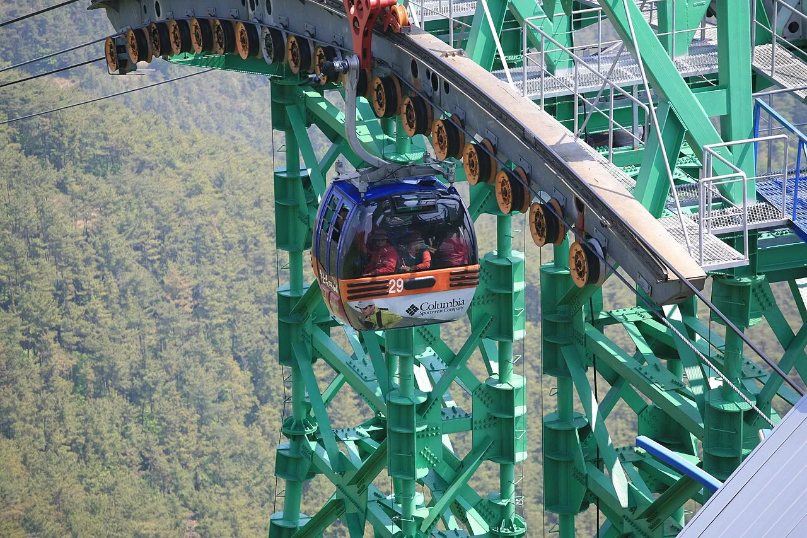
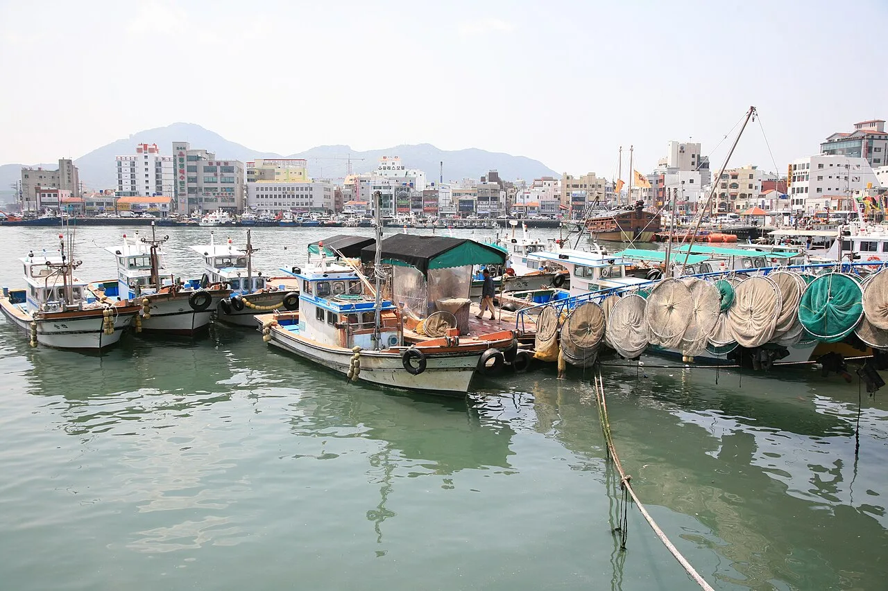
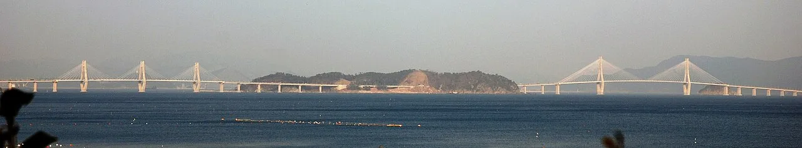
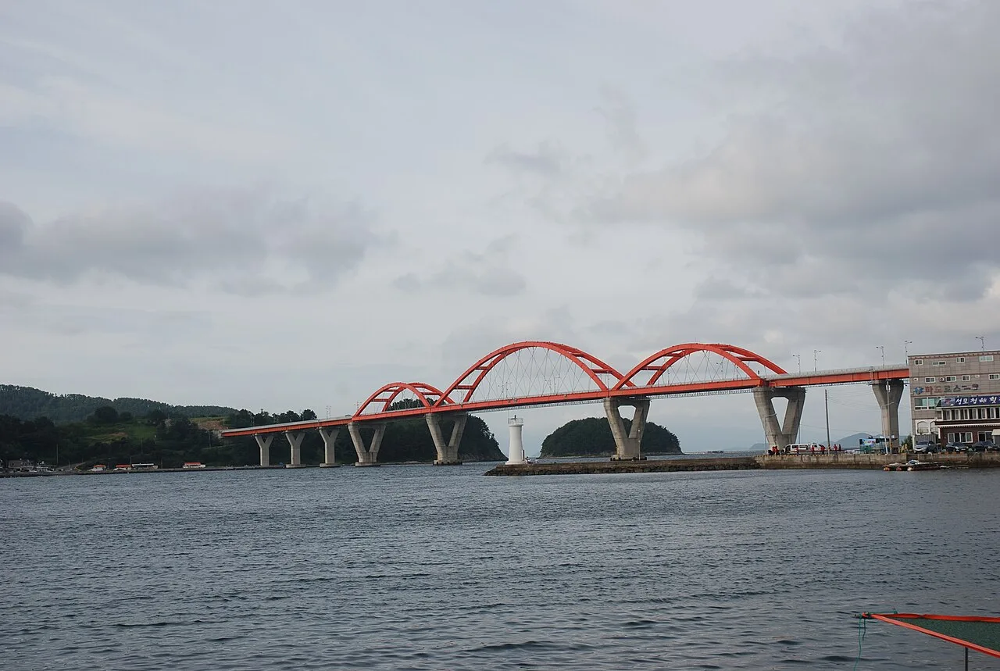

▲ 통영 한려수도 조망 케이블카. 이 풍경을 보려면 먼저 주차부터 해야 한다 ⓒ Wikimedia Commons
1. 무료 주차장의 함정
통영 미륵산 케이블카 주차장은 무료입니다. 규모도 상당히 넓습니다.
그런데 주말 오전이 지나면 혼잡해집니다. 무료이고 넓다는 조건이 오히려 사람을 모으기 때문입니다. 유료 주차장이라면 회전이 빠르지만, 무료 주차장은 온종일 세워 두는 차가 늘어납니다.
여기서 통영 일정의 첫 번째 원칙이 나옵니다. 케이블카를 오후에 타려고 하면 주차부터 막힙니다. 통영에 도착해서 어디를 먼저 갈지 고민하는 대신, 케이블카를 오전에 넣고 나머지를 뒤로 미는 편이 낫습니다.
2. 요금표와 할인 조건
먼저 값을 확인하고 넘어가겠습니다. 개인 기준 어른 왕복이 1만 7,000원입니다.
| 구분 | 왕복 | 편도 |
|---|---|---|
| 대인(어른) | 17,000원 | 13,500원 |
| 소인(만 4세~초등학생) | 13,000원 | 11,000원 |
| 경로(65세 이상) | 14,000원 | 11,000원 |
| 장애인(1~3급) | 11,500원 | 9,500원 |
| 통영시민 | 8,000원 | 6,000원 |
| 단체 대인(20인 이상) | 16,000원 | 13,000원 |
할인 조건이 세 가지 있습니다. 통영 디피랑 영수증을 제시하면 50% 할인(유효기간 이용일로부터 2일 이내), 루지 티켓을 내면 2,000원, 어드벤처타워 연계로 3,000원이 깎입니다.
이 조건이 일정 순서를 바꿉니다. 4인 가족이 어른 둘·소인 둘이면 왕복 정가가 6만 원입니다. 디피랑을 먼저 보고 케이블카를 뒤에 넣으면 이 금액이 반으로 줄어듭니다. 1박 2일이라면 첫날 저녁 디피랑, 다음 날 오전 케이블카가 성립합니다.

▲ 케이블카는 미륵산 능선을 따라 오른다. 정상부에서 한려수도의 섬들이 한눈에 들어온다 ⓒ Wikimedia Commons
3. 헛걸음하지 않으려면 — 휴장일과 조기 마감
정기휴장일이 있습니다. 매월 2주차와 4주차 수요일입니다. 평일에 한산할 때 가려다 휴장일에 도착하는 경우가 여기서 생깁니다.
매표는 운행 종료보다 훨씬 일찍 끝납니다. 종료 2~3시간 전에 조기 마감됩니다. "운행 시간 안에 도착했으니 되겠지"라는 계산이 통하지 않습니다.
악천후 시에도 운행이 중단됩니다. 바닷가 산 위를 지나는 설비라 바람의 영향을 크게 받습니다. 출발 전 확인이 필요합니다.
이 조건이 일정 순서를 바꿉니다. 디피랑을 먼저 보고 케이블카를 뒤에 넣으면 반값이 됩니다. 1박 2일 일정이라면 첫날 저녁 디피랑, 다음 날 오전 케이블카가 성립합니다.

▲ 통영항 일대. 동피랑은 이 항구 뒤편 언덕 위에 있어 차로 올라가는 곳이 아니다 ⓒ Wikimedia Commons
4. 동피랑은 차로 올라가는 곳이 아니다
동피랑은 언덕 위 마을입니다. 골목이 좁고 경사가 급합니다. 내비게이션이 안내하는 대로 따라가다가 차를 돌릴 수도 뺄 수도 없는 자리에 갇히는 사례가 반복되는 곳입니다.
현실적인 방법은 중앙시장 쪽에 차를 두고 걸어 올라가는 것입니다. 통영항 주변 공영주차장을 이용하면 시장과 동피랑을 한 번에 묶을 수 있습니다.
다만 이쪽은 유료이고 주말에는 대기가 생깁니다. 케이블카 주차장과 반대되는 성격입니다. 한쪽은 무료라 안 빠지고, 한쪽은 유료인데 수요가 많습니다.
5. 거제로 넘어가는 두 가지 길
통영에서 거제로 가는 길과, 부산에서 거제로 들어가는 길은 성격이 완전히 다릅니다.

▲ 부산과 거제를 잇는 거가대교. 이동 시간을 크게 줄이지만 통행료가 붙는다 ⓒ Wikimedia Commons
부산에서 출발한다면 거가대교입니다. 침매터널과 사장교를 이어 붙인 구조로, 예전에 크게 돌아가야 했던 구간을 직선으로 만들었습니다. 대신 유료입니다.
통영에서 거제로 넘어갈 때는 다릅니다. 거제대교와 신거제대교로 이어지는 짧은 구간이고, 그 앞뒤로 해안도로가 붙습니다. 이쪽은 이동 자체가 드라이브가 됩니다.

▲ 거제 일대는 섬과 섬을 잇는 다리가 이어지는 구조다 ⓒ Wikimedia Commons
계획을 짤 때 이 차이를 감안해야 합니다. 부산에서 들어와 통영으로 빠져나가는 동선이라면 거가대교 통행료를 한 번만 내면 됩니다. 반대로 왕복하면 두 번입니다.
6. 하루에 묶는 순서
통영과 거제를 하루에 보려면 순서가 곧 성패입니다. 두 지역 모두 주차 자원이 한정돼 있고, 이동에도 시간이 걸립니다.
| 시간대 | 배치 | 이유 |
|---|---|---|
| 오전 이른 시간 | 미륵산 케이블카 | 무료 주차장이 차기 전 |
| 점심 전후 | 중앙시장 · 동피랑 | 도보 이동, 주차 1회로 해결 |
| 오후 | 거제 이동 · 해안도로 | 이동 자체가 관광 |
| 저녁 | 디피랑 또는 귀가 | 야간 콘텐츠 |
반대로 하면 하루가 무너집니다. 오후에 케이블카 주차장에 도착하면 자리를 찾느라 시간을 쓰고, 대기 줄까지 겹칩니다.
7. 자차 여행자를 위한 정리
첫째, 케이블카는 오전에 넣으십시오. 주차와 대기 두 가지를 동시에 피하는 유일한 방법입니다.
둘째, 디피랑 영수증을 버리지 마십시오. 2일 이내라면 케이블카가 반값입니다. 1박 2일 일정에서 특히 유용합니다.
셋째, 동피랑은 걸어서 접근하십시오. 좁은 골목에 차를 들이는 순간 시간과 차체가 함께 손해를 봅니다.
넷째, 거가대교 통행료를 왕복으로 계산하십시오. 부산 왕복이라면 두 번입니다. 통영 방향으로 빠져나오는 동선으로 짜면 한 번으로 줄일 수 있습니다.
정리하면 이렇습니다. 통영에서 자차 여행의 변수는 거리나 볼거리가 아니라 주차장이 차는 시각입니다. 그 시각을 기준으로 하루를 거꾸로 짜면 같은 코스도 두 시간이 짧아집니다.